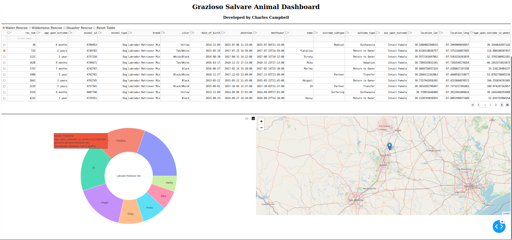
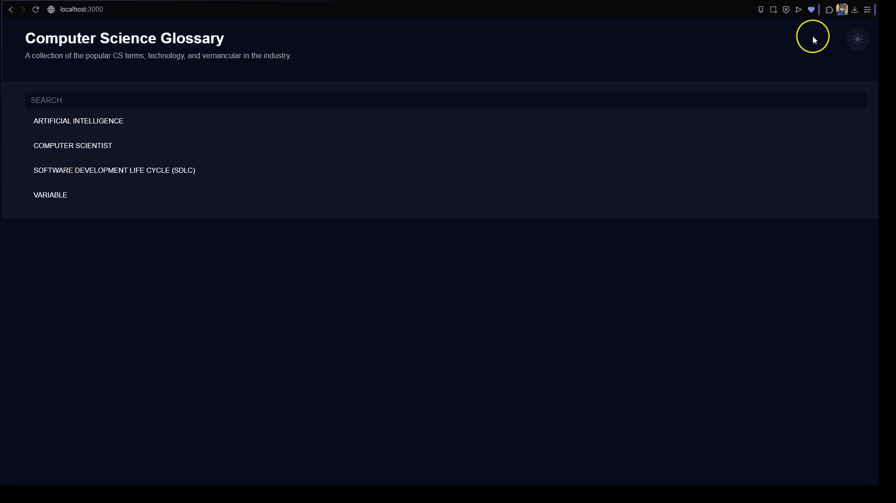
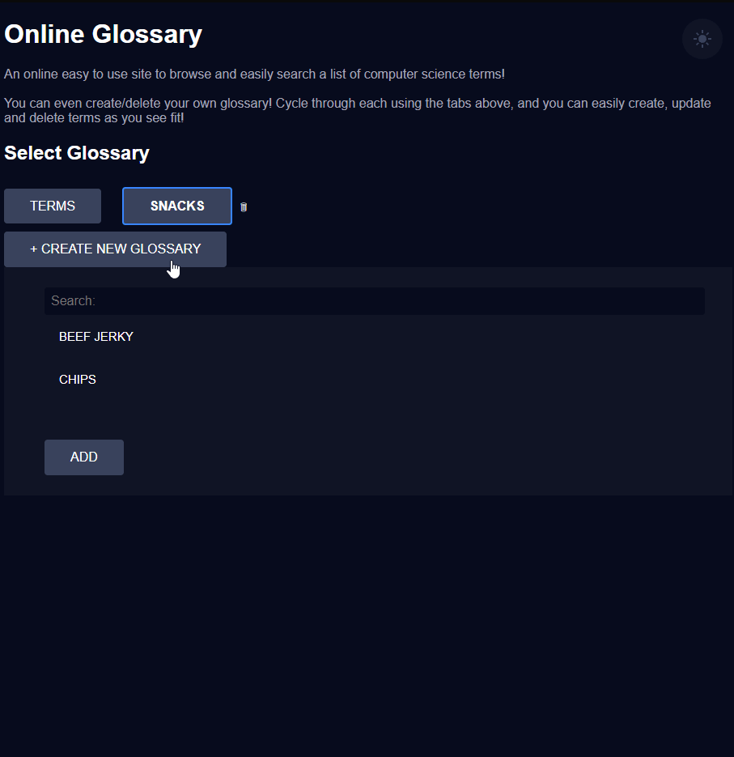

ePortfolio Item: Project Enhancement,
by: Charles Campbell.
SELF-ASSESSMENT
This ePortfolio item is meant to highlight my strengths as a software engineer. I'll showcase my enhancements on a prior project, wherein I would not only improve the: software design & engineering, algorithms & data structures, and the database of the software itself, but also show how I have improved as a computer scientist and software developer.
Through my studies in my bachelors of computer science, I've accumulated a plethora of knowledge and hands on skills. This enhacement project is a culmination of what I've gained, learned, and practiced through my journey.
- • Collaborating in a team environment:
- • Communicating with stakeholders:
- • Data structures & algorithms:
- • Software engineering & databases:
- • Security:
Computer scientist development teams are a cohesive group that utilize their critical thinking, technical skills, and problem solving skills together to provide professional, high-quality solutions to problems in the systems and products they design.
I've researched and practiced my understanding of the Software Development Lifecycle (SDLC), and the industry standards of Agile methodologies, to know how a fast paced and efficient team of technical engineers should operate to tackle and solve almost any problem.
Through my work in my projects (much like the original artifact I've improved upon), I've gained firsthand practice on the importance of communicating with stakeholders (or individual clients). The gathering of requirements and understanding the problem directly helps either a team or solo computer engineer to ensure system/project success. Through clear and non-technical communication, both stakeholders and I were able to work collaboratively to produce effective and sound solutions.
Data is the critical element in any software. The algorithms that help move/modify that data are also essential for desired results. In my studies and practice in designing of data structures, along with the algorithms such as the fundemental CRUD operations, I've become both proficient in modeling structures like hash-tables, lists, or trees while knowing how to handle that data with the use of algorithms.
While both researching and practicing engineering technical solutions, I've come to learn the importance of key concepts when designing software. I know that designing the codebase should be done with continuous testing, and formatted in such a way that both makes it easily readable/understandable by other team members or future developers and makes it easier to maintain and evolve. Easily understood and readable software and diagrams/documentation are essential skills I've gained and will continue to improve upon.
“Any fool can write code that a computer can understand.
Good programmers write code that humans can understand.” - Martin Fowler
Studying about cyryptography, and implementing mitigation strategies like authentication and secure data storage have helped me learn how to keep the users safe when they operate with software. I've come to know the importance and need for secure coding practices, and how essential staying up to date on the guidelines provided by OWASP or utilizing dependecy check tools urged by the NIST can help eliminate vulnerabilities and, most importantly, ensure business continuity and trust with its users and the general public.
Summary
The original project was a simple Python & MongoDB web development artifact, that helped a client view a front-end dashboard of data that was pulled from a database with a simple API that did not take full advantage of CRUd algorithms. I sought to evolve the project into a simple application (online glossary), while upgrading from the Python code base to a more modern web development tool: the MEAN full-stack. Along with this upgrade of software engineering, I also wished to upgrade the algorithms (CRUD) and test a new data structure that would allow for more user functions and capabilities. Finally, I wished to evolve the use of the database (MongoDB) so that it would allow for more flexibility and security in the program. Below are the results.
INFORMAL CODE REVIEW:
Enhancements
Software Design & Engineering
- Python
- ->
- MEAN Stack
Transferring the logic of the application to a different development tool like the MEAN stack involved a myraid of testing, research, and problem solving. In the end, the final result showcased a vast improvement of not only the front-end, but an overall higher-quality codebase and structure; the MEAN stack tools helped make this possible.
Before:
After:
The enhancement allowed me to showcase my mastery of building collaborative environments that support organizational decision making; my ability to design, develop, and deliver professional-quality communications that are coherent, technically sound, and appropriately adapted to specific audiences and contexts; and lastly, demonstrating my ability to use well-founded and innovative techniques, skills, and tools in computing practices for solutions that deliver value.
Original Artifact Enhanced Artifact
Algorithms & Data Structures
- Read-Only Data
- ->
- Full CRUD Operations
Before, in the original artifact, the only algorithm that was used from the Python CRUD API module was to read data from the database. Additionally, the radio buttons were only able to filter based on predefined parameters. The user had no way to filter how they saw fit, they also couldn't create a new item, delete existing entries, or update any data either. I sought to enhance those algorithms to ensure that the user could have more capabilities, and my enhancements in the JavaScript codebase proved fruitful with a online glossary page with add, edit and delete capabilities (see demo in Databases enhancement).
The enhancement allowed me to showcase my mastery of designing and evaluating computing solutions that solved a given problem using algorithmic principles and appropriate computer science practices & standards; along with demonstrating my ability to use well-founded and innovative techniques, skills, and tools in computing practices for solutions that deliver value.
Original Artifact Enhanced Artifact
Databases
View the full narrative here!
For the final enhancement, I wanted to expand upon the capabilities of utilizing the MongoDB, a NoSQL database that's a common tool used in web development. I wanted to give users the capabilities to create and delete their own lists; but I instantly knew of a potential data security and logic flaw this could present. If a user deleted the main list (the CS terms collection), this could cause potential unforseen errors/flaws and be a major security issue to the valuable data and logic resources held within the MongoDB. Thus, thanks to the versatile MEAN stack and the powerful JavaScript versatility, I was able to both implement both the desired enhacement, while also designing the functions to mitigate the identified issue by ensuring users couldn't delete the original CS terms list (see below).
Final result after all enhancements:
This final enhancement allowed me to demonstrate my ability to use well-founded and innovative techniques, skills, and tools in computing practices to fulfill technical solutions that deliver value & accomplish specific goals; while also designing with a security mindset that anticipates potential vulnerabilities, mitigates flaws, and enhances security of data & resources.
Original Artifact Enhanced Artifact
Skills
- MEAN Stack
- JavaScript
- MongoDB
- HTML
- CSS
- UI/UX
- Full-Stack Development
- Data Security